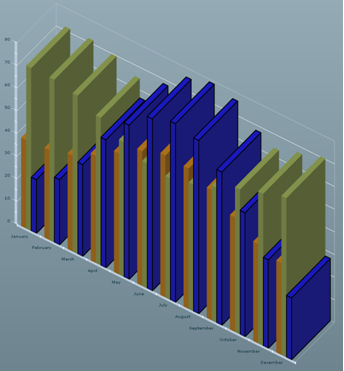
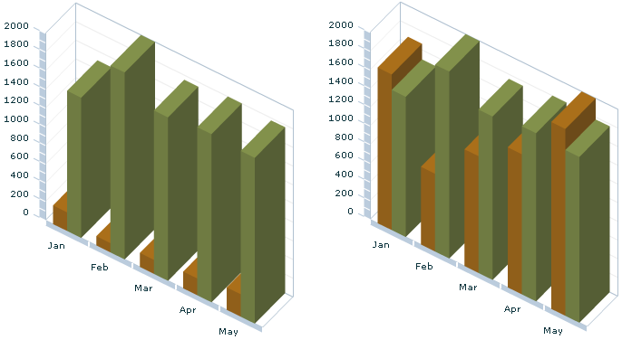

In addition to the properties of the chart itself, some
common properties are available for 3D chart series.
All Cartesian series support the
fill and
stroke style properties. You can use these properties to
decide how you want to render a given series. For example, you can
change the series definition of the
ColumnChart3D example
(see
3D column chart) to the following:
<ilog:ColumnSeries3D yField="London" />
<ilog:ColumnSeries3D yField="Sydney" />
<ilog:ColumnSeries3D yField="Beijing">
<ilog:fill>
<mx:SolidColor color="blue"/>
</ilog:fill>
<ilog:stroke>
<mx:Stroke color="black" weight="2"/>
</ilog:stroke>
</ilog:ColumnSeries3D>
This causes the last series (Beijing) to be rendered
in blue with a thick black border as shown in the following figure.

If you need each column or bar in a series, or each slice
of a pie to be of a given color, you can either use the
fill style property or give a
fillFunction to the series that will be in charge of color computation.
Another set of properties common to all the
Series3Ds are the various axis properties. For example, all
CartesianSeries3D series have a
verticalAxis and a
horizontalAxis property. When these properties are specified,
the series uses these axes as references instead of the chart axes.
This allows you, for example, to compare data with different data
ranges on a single chart.
The following example shows how to use this feature.
<?xml version="1.0"?>
<!-- Multiple Axis example to demonstrate the CartesianChart3D class. -->
<mx:Application xmlns:mx="http://www.adobe.com/2006/mxml"
xmlns:ilog="http://www.ilog.com/2007/ilog/flex">
<mx:Script>
<![CDATA[
import mx.collections.ArrayCollection;
[Bindable]
private var expensesAC:ArrayCollection = new ArrayCollection( [
{ Month: "Jan", Profit: 200, Revenues: 1500 },
{ Month: "Feb", Profit: 100, Revenues: 2000 },
{ Month: "Mar", Profit: 150, Revenues: 1750 },
{ Month: "Apr", Profit: 180, Revenues: 1800 },
{ Month: "May", Profit: 240, Revenues: 1775} ]);
]]>
</mx:Script>
<mx:Panel title="Multiple Axis Example" height="100%" width="100%">
<ilog:ColumnChart3D id="columnchart" height="100%" width="100%"
paddingLeft="5" paddingRight="5"
showDataTips="true" dataProvider="{expensesAC}">
<ilog:horizontalAxis>
<mx:CategoryAxis categoryField="Month"/>
</ilog:horizontalAxis>
<!-- Use two different axes to make sure the vertical values
of the two different series are spread on the whole
axis length. -->
<ilog:series>
<ilog:ColumnSeries3D yField="Profit" displayName="Profit">
<ilog:verticalAxis>
<mx:LinearAxis/>
</ilog:verticalAxis>
</ilog:ColumnSeries3D>
<ilog:ColumnSeries3D yField="Revenues" displayName="Expenses">
<ilog:verticalAxis>
<mx:LinearAxis/>
</ilog:verticalAxis>
</ilog:ColumnSeries3D>
</ilog:series>
</ilog:ColumnChart3D>
</mx:Panel>
</mx:Application>
The following figure shows the chart rendered without
the axes specified on the series and then with the axes specified.
